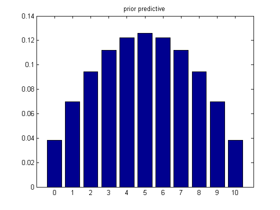
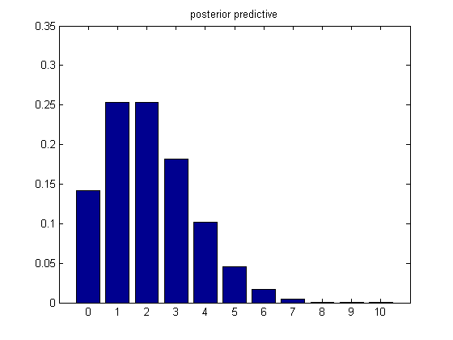
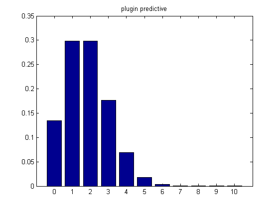

Posterior Predictive Distribution for Beta-Binomial model
N = 10;
X = [1 2]';
N1 = sum(X);
N0 = N*length(X)-N1;
a = 2;
b = 2;
xs = 0:N;
priorPred = exp(betaBinomLogprob(a, b, N, xs));
figure; bar(priorPred);
set(gca,'xticklabel', xs);
title('prior predictive')
printPmtkFigure('BBpriorpred');
postPred = exp(betaBinomLogprob(a+N1, b+N0, N, xs));
figure; bar(postPred);
set(gca,'xticklabel', xs);
title('posterior predictive')
printPmtkFigure('BBpostpred');
thetaMap = (a+N1-1)/(a+N1+b+N0-2);
pluginPred = binopdf(xs, N, thetaMap);
figure; bar(pluginPred);
set(gca,'xticklabel', xs);
title('plugin predictive')
printPmtkFigure('BBpluginpred');
  